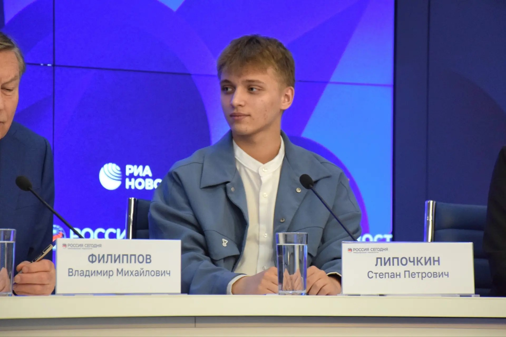

ПМЭФ-2026: единственный школьник из Москвы в делегации Росмолодёжи
Стал единственным школьником из Москвы, вошедшим в делегацию Росмолодёжи на Петербургском международном экономическом форуме — 2026. Три дня интенсивной работы: панельные сессии, встречи с руководителями федеральных ведомств, обсуждение молодёжной политики и технологического суверенитета.